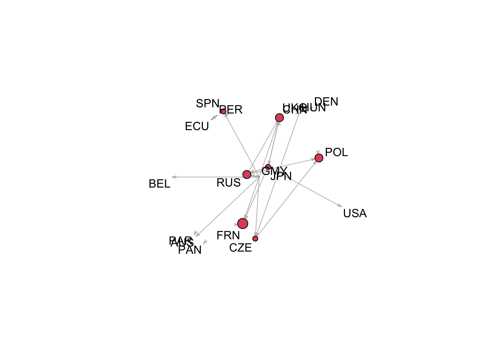

As in past weeks, you need to call the libraries that you need for
your code to run. You will need statnet to create and
visualise networks but you may also need other libraries such as
tidyverse.
library(statnet)
library(tidyverse)In today’s session, we will continue to work with the Militarized Interstate Dispute Dataset (MID). If you want to read again about this dataset, please go to MID Homepage.
Please load the raw data we used last week and that you will need again for your network analysis. As last week, you will need to adjust the file path to your dataset depending on where you downloaded and saved it.
mid <- read.csv("~/Dropbox/UCL/courses/networks/data/Dyadic MIDs 4/dyadic_mid_4.02.csv") In the following lines of code, I make examples of how to subset the MID dataset. You can for example reduce the data to a certain time frame or only focus on militarised interstate disputes that were particularly hostile. We asked you to draw some networks of conflict throughout WWII in your groups. After learning how to subset the dataset in general, you should be able to adjust the code and draw your group’s own networks with the MID data.
For the purpose of making our analysis easier, we only focus on directed instances of MIDs where state A was the primary initiator of a conflict. In order to reduce the whole dataset to only the directed instances of MIDs in the data, run this code:
mid <- mid[mid$rolea==1,]
# this is equivalent to
mid <- filter(mid,rolea==1)Let’s reduce the 59 variables in the MID dataset to a few variables
that will likely be relevant for your group work. In the code below, I
drop a few variables that you will likely not need. Note that you can
drop variables by using a - in front of the
c() command. As an example, I drop a few variables telling
us if the coders changed anything in the data in their last update to
the dataset or not:
mid <- select(mid,-c("change","changetype_1","changetype_2"))Instead of dropping variables, you can also select which ones to keep. My suggestion is to keep the following variables for your purposes:
mid <- mid[,c("namea","nameb", "strtmnth","strtyr",
"endmnth","endyear", "outcome", "fatlev", "hihost",
"revtypea")]
# this is equivalent to :
mid <- select(mid,
c("namea","nameb", "strtmnth","strtyr",
"endmnth","endyear", "outcome", "fatlev", "hihost",
"revtypea"))Now you should have a much more manageable dataset of 4212 observations of MIDs and 10 variables to work with. Take a minute and explore the data.
# Summary stats of all variables
summary(mid)## namea nameb strtmnth strtyr
## Length:4212 Length:4212 Min. : 1.000 Min. :1816
## Class :character Class :character 1st Qu.: 4.000 1st Qu.:1937
## Mode :character Mode :character Median : 7.000 Median :1967
## Mean : 6.551 Mean :1957
## 3rd Qu.: 9.000 3rd Qu.:1993
## Max. :12.000 Max. :2014
## endmnth endyear outcome fatlev
## Min. : 1.000 Min. :1816 Min. :0.00 Min. :-9.0000
## 1st Qu.: 3.000 1st Qu.:1938 1st Qu.:0.00 1st Qu.: 0.0000
## Median : 7.000 Median :1969 Median :5.00 Median : 0.0000
## Mean : 6.483 Mean :1958 Mean :3.51 Mean : 0.3689
## 3rd Qu.:10.000 3rd Qu.:1994 3rd Qu.:5.00 3rd Qu.: 0.0000
## Max. :12.000 Max. :2014 Max. :8.00 Max. : 6.0000
## hihost revtypea
## Min. :2.000 Min. :0.000
## 1st Qu.:3.000 1st Qu.:0.000
## Median :4.000 Median :1.000
## Mean :3.765 Mean :1.287
## 3rd Qu.:4.000 3rd Qu.:2.000
## Max. :5.000 Max. :4.000# Variable names
names(mid)## [1] "namea" "nameb" "strtmnth" "strtyr" "endmnth" "endyear"
## [7] "outcome" "fatlev" "hihost" "revtypea"You can look at the distribution of a specific variable for example
by using the table function:
# Looking at the distribution of fatalities
table(mid$fatlev)##
## -9 0 1 2 3 4 5 6
## 27 3603 235 85 39 29 5 189# most interstate disputes have no deaths recorded
# 189 MIDs had more than 1000 fatalities and could count as a warWe now want you to create in groups a couple of network visualisations tracing the diffusion of conflict throughout WWII. You will need the code to subset data as well as last week’s code to do that. Let me make an example.
I am interested in plotting the network of MIDs just before the WWII began. Since World War II is considered to have begun on 1 September 1939, when Nazi Germany invaded Poland, I will plot the MIDs in the 3 years before September 1939. I create a new object for this data.
mid_beforeWWII <- filter(mid,
# this code limits the data to the years before 1939
strtyr<1939 &
# this code limits the data to the time after and during 1936
strtyr>=1936)I seem to have 56 MIDs in the data in the 3 years before the conflict. To double-check if I did this correctly, I check the years that I can still find in my dataset and it seems to be that I selected the correct years:
table(mid_beforeWWII$strtyr)##
## 1936 1937 1938
## 14 21 21range(mid_beforeWWII$strtyr)## [1] 1936 1938Lets check out the states that were involved in MIDs before WWII (code to generate the map not relevant for today):
states_before <- unique(c(as.character(mid_beforeWWII$namea),
as.character(mid_beforeWWII$nameb)))
states_before## [1] "GMY" "JPN" "RUS" "ITA" "BOL" "PER" "LIT" "CZE" "YUG" "HUN" "ECU" "CHN"
## [13] "TUR" "AUS" "UKG" "BEL" "FRN" "SPN" "POL" "PAR" "USA" "PAN" "DEN"Now, I am turning to the visualisation of this network using the code from last week but I adjust it for my data:
midMat <- matrix(0,nrow=length(states_before),ncol=length(states_before))
rownames(midMat) <- states_before
colnames(midMat) <- states_beforeThe next step is that we need to go through the dataset with a loop as explained last week. We go through each line of our filtered mid dataset, take namea and nameb of each line and add an entry in midMat accordingly. This will turn your data into a network.
for(i in 1:dim(mid_beforeWWII)[1]){
midMat[as.character(mid_beforeWWII$namea[i]),as.character(mid_beforeWWII$nameb[i])] <- midMat[as.character(mid_beforeWWII$namea[i]),as.character(mid_beforeWWII$nameb[i])]+1
}Now I tell R we want this matrix to be understood as a network.
midNet <- network(midMat,directed=TRUE)
network.vertex.names(midNet) <- states_beforeAnd then we are ready to plot the network. I decided to plot the labels of the state and to vary the size depending on who is the actor with the highest indegree centrality (receiving most MIDs just before the war WWII).
in.n <- degree(midNet,cmode="indegree")
gplot(midNet,
# this labels the nodes
label=states_before,
# this adjusts the size of the nodes
vertex.cex=log(in.n),
edge.lwd=0.01,
arrowhead.cex=0.5,
edge.col="grey",gmode="digraph",mode="target")
This is already somewhat informative. We can see that France, Russia, United Kingdom, and Poland “receive” the most MIDs.
It is your turn now!
Your group should now work on your own network visualisation to visualise the diffusion of conflict during World War II. Try subsetting the data for a time frame during the WWII (the whole time or different year episodes). You might also choose to focus only on conflicts with high fatality or where actual physical violence between countries was used.
As a group, you should try to produce at least one network of conflict during the World War II. You can also produce a series of networks for different time frames. However, aim to produce a network visualisation that can be interpreted meaningfully in the context of World War II.